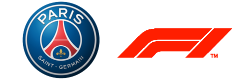
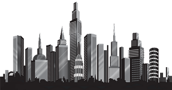

J'ai 19 ans et je suis de Villiers-le Bel dans le Val d'Oise (95). Je suis actuellement en 1re année à l'ESSEC Business School sur Cergy. Je comprend jusqu'à 7 langues mais j'en parle couramment que deux : le français et le bengali. J'ai plusieurs passions/hobbies mais également des projets dont je vais vous en faire part tout de suite !
Ne cliquez pas 👀Commençons par parler de mes hobbies. Alors j'en ai plusieurs : j'aime pratiquer le sport bien évidemment mais j'aime également écouter de la musique, en particulier le rap, j'aime aussi passer du temps avec ma famille, mes amis, et enfin ce que j'aime par dessus tout, c'est de faire des nuits blanches sur les réseaux sociaux.
Donc pour parler de mes passions, le football en est une. Fervent supporter du PSG depuis tout petit, je rêve que mon club remporte la Ligue des Champions. Ensuite, j'aime énormément la Formule 1, je connais les rouages de ce sport depuis bien longtemps, il faut savoir que j'ai grandi avec les Schumacher, Räikkönen, Alonso, Vettel et surtout Lewis Hamilton.
On a souvent dit de moi que j'étais quelqu'un d'ambitieux. J'ai de nombreux rêves que j'aimerais réaliser un jour. A commencer par une belle réussite professionnelle, ce qui me permettrait pourquoi pas de lancer ma propre structure. Je ne sais pas encore dans quoi, mais ces rêves lointaines, je l'espère, se concretiseront en des projets prochainement aboutis.
